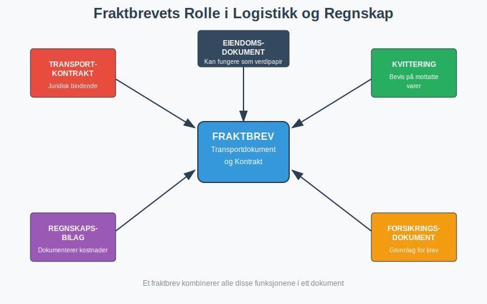
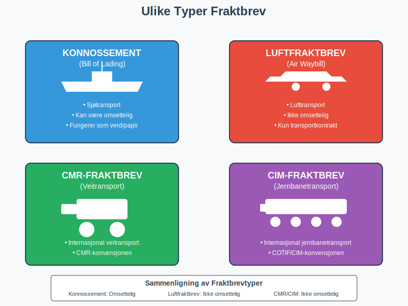
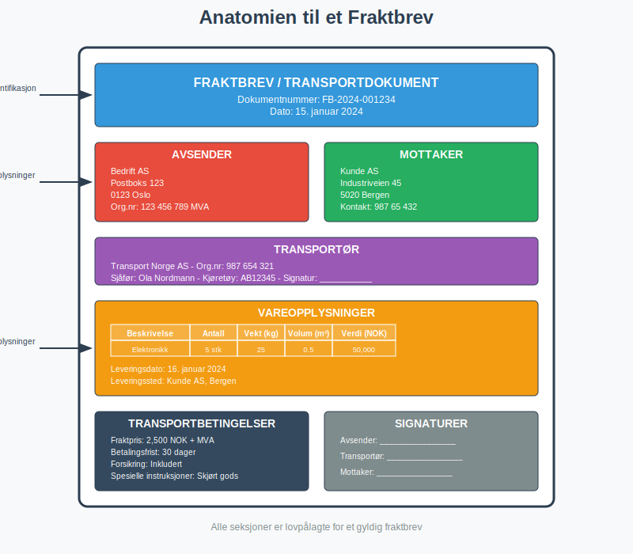
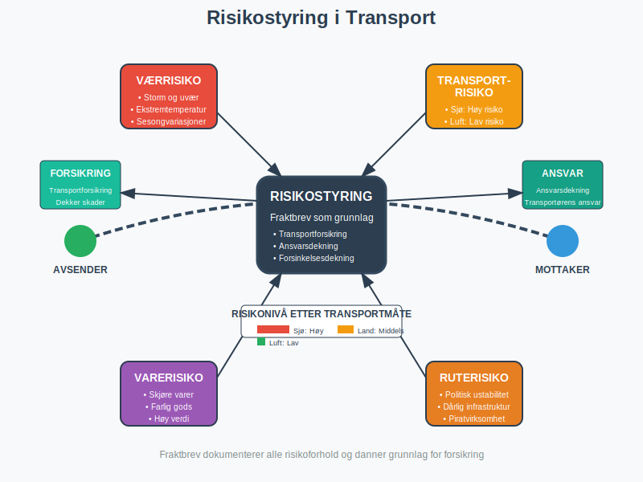

Et fraktbrev er et juridisk bindende transportdokument som fungerer som kontrakt mellom avsender og transportør for frakt av varer. Dette dokumentet er sentralt i både logistikk og regnskap, da det dokumenterer transportkostnader, ansvar og leveringsbetingelser. For bedrifter som driver med engroshandel eller detaljhandel er korrekt håndtering av fraktbrev essensielt for dokumentasjon i regnskap og bokføring.
For optimal logistikk kan det være lurt å benytte en profesjonell speditør.
Seksjon 1: Fraktbrevets Funksjon og Betydning
Et fraktbrev tjener flere kritiske funksjoner i forretningssammenheng og må behandles som et viktig bilag i bedriftens regnskapssystem.

Hovedfunksjoner:
- Transportkontrakt: Etablerer juridisk bindende avtale mellom partene
- Kvittering: Bevis på at transportøren har mottatt varene
- Eiendomsdokument: Kan fungere som verdipapir for varene under transport
- Regnskapsbilag: Dokumenterer transportkostnader for bokføring
- Forsikringsdokument: Grunnlag for eventuelle forsikringskrav
Seksjon 2: Typer Fraktbrev
Det finnes flere typer fraktbrev avhengig av transportmåte og juridiske krav. Valg av fraktbrevtype påvirker både ansvar og regnskapsmessig behandling.

2.1 Konnossement (Bill of Lading)
Konnossement brukes ved sjøtransport og er det mest omfattende fraktbrevet. Det har tre hovedfunksjoner:
- Transportkontrakt mellom avsender og reder
- Kvittering for mottatte varer
- Verdipapir som kan omsettes
| Konnossementtype | Beskrivelse | Omsettbarhet |
|---|---|---|
| Rektakonnossement | Utstedt til navngitt mottaker | Ikke omsettelig |
| Ordrekonnossement | Utstedt til ordre | Omsettelig ved endossering |
| Ihendehaverkonnossement | Utstedt til ihendehaver | Fritt omsettelig |
2.2 Luftfraktbrev (Air Waybill)
Brukes ved lufttransport og er ikke omsettelig. Det fungerer primært som:
- Transportkontrakt
- Kvittering for varer
- Instruksjoner til transportør
2.3 Veifrakt-/Jernbanefraktbrev
For landtransport brukes spesialiserte fraktbrev som følger nasjonale og internasjonale konvensjoner:
- CMR-fraktbrev: For internasjonal veitransport
- CIM-fraktbrev: For internasjonal jernbanetransport
- Nasjonale fraktbrev: For innenlandsk transport
Seksjon 3: Obligatorisk Innhold i Fraktbrev
For at et fraktbrev skal være juridisk gyldig og fungere som korrekt regnskapsbilag, må det inneholde spesifikke opplysninger.
Lovpålagte Opplysninger:
-
Avsenderopplysninger:
- Navn og adresse
- Organisasjonsnummer
- Kontaktinformasjon
-
Mottakeropplysninger:
- Navn og adresse
- Leveringssted hvis forskjellig
-
Transportøropplysninger:
- Transportselskap
- Førernavn og signatur
- Kjøretøyinformasjon
-
Vareopplysninger:
- Detaljert beskrivelse av varer
- Antall kolli
- Vekt og volum
- Verdi for forsikringsformål
-
Transportbetingelser:
- Fraktpris og betalingsbetingelser
- Leveringsdato og -tid
- Spesielle instruksjoner

Seksjon 4: Regnskapsmessig Behandling
Fraktbrev må behandles korrekt i regnskapet for å sikre nøyaktig kostnadsføring og overholdelse av bokføringsloven.
4.1 Bokføring av Fraktkostnader
Fraktkostnader kan behandles på ulike måter avhengig av situasjonen:
| Scenario | Kontotype | Behandling |
|---|---|---|
| Innkjøpsfraktkostnader | Varekostnad | Tillegges anskaffelseskost |
| Salgsfraktkostnader | Driftskostnad | Føres som salgskostnad |
| Returfrakt | Varekostnad/Driftskostnad | Avhenger av årsak til retur |
4.2 MVA-behandling
Frakttjenester er normalt MVA-pliktige i Norge:
- Innenlandsk frakt: 25% MVA
- Internasjonal frakt: Kan være fritatt eller ha redusert sats
- Kombinerte tjenester: Må vurderes individuelt
For korrekt MVA-behandling, se vår guide til avgiftsplikt (MVA).
4.3 Attestering og Kontroll
Fraktbrev må gjennom samme attesteringsprosess som andre regnskapsbilag:
- Saklig kontroll: Er frakttjenesten utført som avtalt?
- Regnskapsmessig kontroll: Er fraktbrevet korrekt kontert?
- Økonomisk kontroll: Er kostnaden innenfor budsjett?
Seksjon 5: Digitalisering av Fraktbrev
Moderne logistikk beveger seg mot digitale løsninger som kan integreres med ERP-systemer for automatisert behandling.
Fordeler med Digitale Fraktbrev:
- Raskere behandling: Eliminerer papirbasert håndtering
- Bedre sporbarhet: Sanntidsoppdateringer av forsendelser
- Reduserte kostnader: Mindre administrativt arbeid
- Miljøvennlig: Reduserer papirforbruk
- Automatisk integrasjon: Direkte kobling til regnskapssystem
Teknologiske Løsninger:
- EDI (Electronic Data Interchange): Standardisert elektronisk datautveksling
- API-integrasjoner: Direkte systemkommunikasjon
- Blockchain: Sikker og transparent dokumentasjon
- IoT-sensorer: Sanntidsovervåking av forsendelser
Seksjon 6: Internasjonale Konvensjoner
Ved internasjonal handel reguleres fraktbrev av internasjonale konvensjoner som påvirker ansvar og erstatning.
Viktige Konvensjoner:
| Konvensjon | Transportmåte | Hovedbestemmelser |
|---|---|---|
| Haag-Visby reglene | Sjøtransport | Begrenser reders ansvar |
| Montreal-konvensjonen | Lufttransport | Regulerer flyselskaps ansvar |
| CMR-konvensjonen | Veitransport | Europeisk veitransportrett |
| COTIF/CIM | Jernbanetransport | Internasjonal jernbanetransport |
Ansvarsbegrensninger
De fleste internasjonale konvensjoner har ansvarsbegrensninger som påvirker forsikringsbehov:
- Sjøfrakt: Ofte begrenset til SDR (Special Drawing Rights) per kolli
- Luftfrakt: Begrenset erstatning per kilo
- Landtransport: Varierer etter konvensjon og nasjonale regler
Seksjon 7: Forsikring og Risikostyring
Fraktbrev er grunnlaget for transportforsikring og risikohåndtering i logistikken.
Forsikringstyper:
- Transportforsikring: Dekker skade på varer under transport
- Ansvarsdekning: Dekker transportørens ansvar
- Forsinkelsesdekning: Kompenserer for forsinket levering
Risikofaktorer:
- Transportmåte: Sjø, luft, land har ulike risikonivåer
- Varetype: Skjøre, farlige eller verdifulle varer
- Transportrute: Politisk stabilitet og infrastruktur
- Værforhold: Sesongvariasjoner og ekstremvær

Seksjon 8: Praktiske Råd for Bedrifter
For å optimalisere håndtering av fraktbrev og transportkostnader bør bedrifter implementere systematiske rutiner.
Best Practices:
-
Standardiserte Prosedyrer:
- Etabler klare rutiner for fraktbrevhåndtering
- Tren personale i korrekt dokumentasjon
- Implementer kvalitetskontroll
-
Leverandørstyring:
- Evaluer transportører regelmessig
- Forhandle rammeavtaler for bedre priser
- Sikre forsikringsdekning
-
Kostnadsoptimalisering:
- Analyser fraktkostnader regelmessig
- Vurder konsolidering av forsendelser
- Utnytt dekningsbidragsanalyse for å optimalisere logistikk
-
Teknologiutnyttelse:
- Implementer digitale løsninger
- Integrer med ERP-system
- Bruk data for kontinuerlig forbedring
Vanlige Feil å Unngå:
- Ufullstendig dokumentasjon: Kan føre til forsinkelser og ekstrakostnader
- Manglende forsikring: Eksponerer bedriften for unødvendig risiko
- Dårlig leverandøroppfølging: Kan resultere i dårlig service og høye kostnader
- Ineffektiv bilagsføring: Kompliserer regnskapsarbeid og revisjon
Seksjon 9: Juridiske Aspekter og Tvister
Fraktbrev er juridiske dokumenter som kan være grunnlag for tvister og rettslige prosesser.
Vanlige Tvisteområder:
- Skade på varer: Hvem er ansvarlig og hvor mye erstatning?
- Forsinkelser: Konsekvenser og kompensasjon
- Manglende levering: Ansvar og erstatningsplikt
- Fraktpriser: Uenighet om kostnader og tillegg
Tvisteløsning:
- Direkte forhandling: Første skritt i konfliktløsning
- Mekling: Nøytral tredjepart fasiliterer løsning
- Voldgift: Bindende avgjørelse av voldgiftsrett
- Rettslig prosess: Siste utvei ved komplekse tvister
Bevissikring:
For å sikre sterke juridiske posisjoner bør bedrifter:
- Dokumentere alt: Fotografier, korrespondanse, vitner
- Oppbevare originaldokumenter: Følg arkiveringskrav
- Reagere raskt: Overhold frister for reklamasjon
- Søk juridisk bistand: Ved komplekse saker
Seksjon 10: Fremtidige Trender
Transportbransjen gjennomgår betydelige endringer som påvirker fraktbrevets rolle og funksjon.
Teknologiske Innovasjoner:
- Kunstig intelligens: Automatisert dokumentbehandling og fakturatolk
- Blockchain: Uforanderlig dokumentasjon og smart contracts
- IoT og sensorer: Sanntidsovervåking av forsendelser
- Autonome kjøretøy: Endrer ansvar og dokumentasjonskrav
Regulatoriske Endringer:
- Miljøkrav: Økte krav til bærekraftig transport
- Digitalisering: Krav til elektronisk dokumentasjon
- Datasikkerhet: GDPR og andre personvernregler
- Internasjonal harmonisering: Standardisering av prosedyrer
Påvirkning på Regnskap:
Disse endringene vil påvirke hvordan fraktbrev behandles i regnskapet:
- Automatisert bilagsregistrering
- Sanntids kostnadsoppfølging
- Integrert rapportering
- Forbedret internkontroll
Bedrifter som tilpasser seg disse trendene tidlig vil oppnå konkurransefortrinn gjennom mer effektiv logistikk og bedre kostnadskontroll. Det er viktig å holde seg oppdatert på utviklingen og vurdere hvordan nye teknologier kan integreres i eksisterende ERP-systemer og regnskapsprosesser.
Korrekt håndtering av fraktbrev er essensielt for moderne bedrifter som driver med fysiske varer. Ved å forstå de juridiske, regnskapsmessige og praktiske aspektene kan bedrifter optimalisere sin logistikk, redusere risiko og sikre korrekt dokumentasjon i regnskap og bokføring.